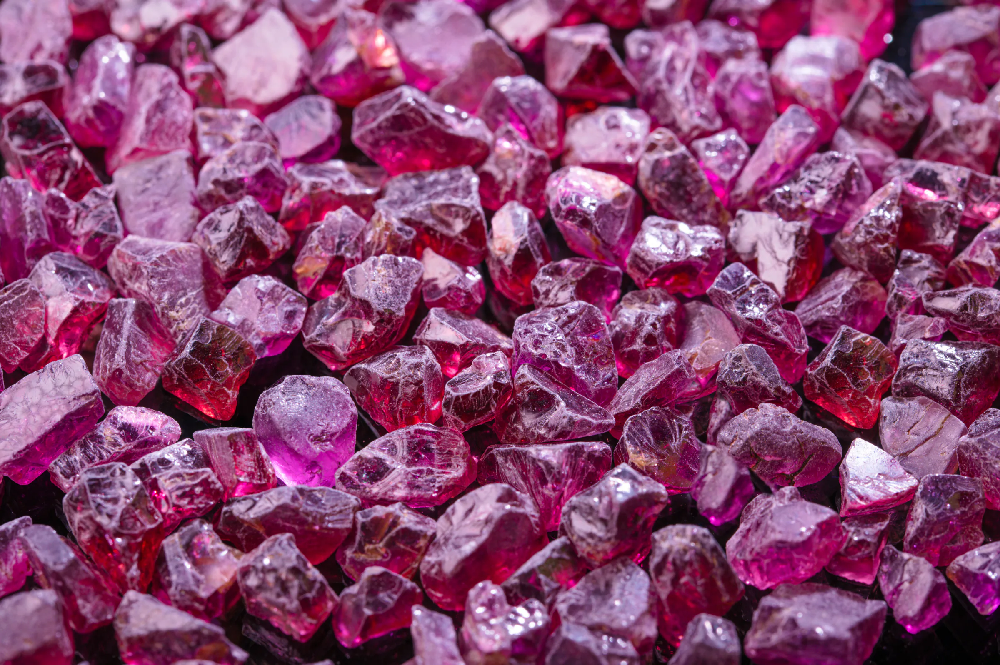
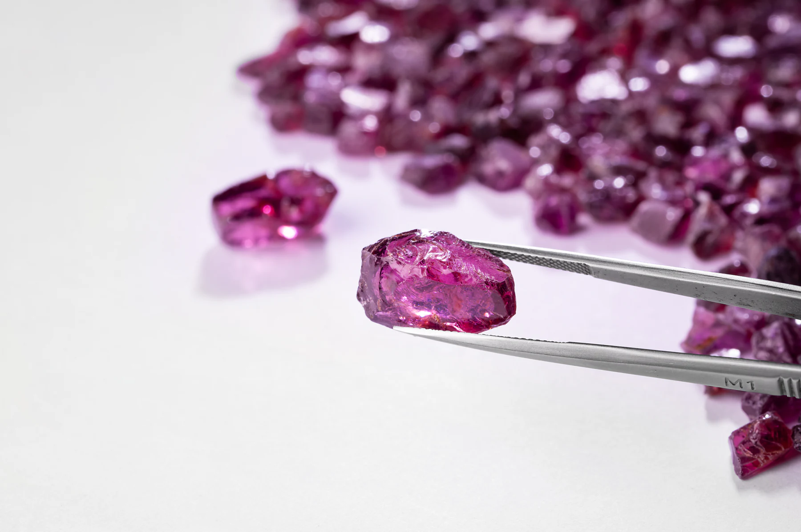
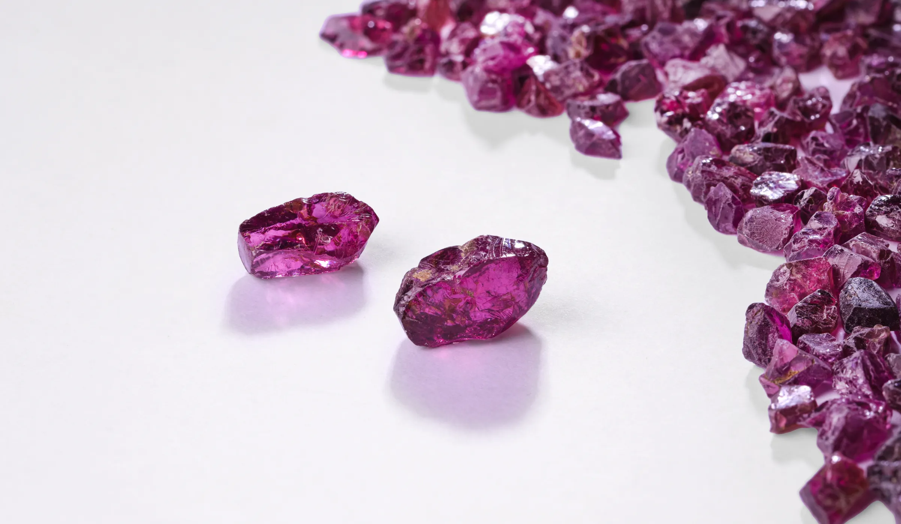
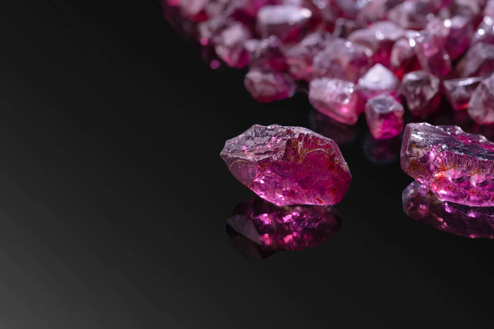
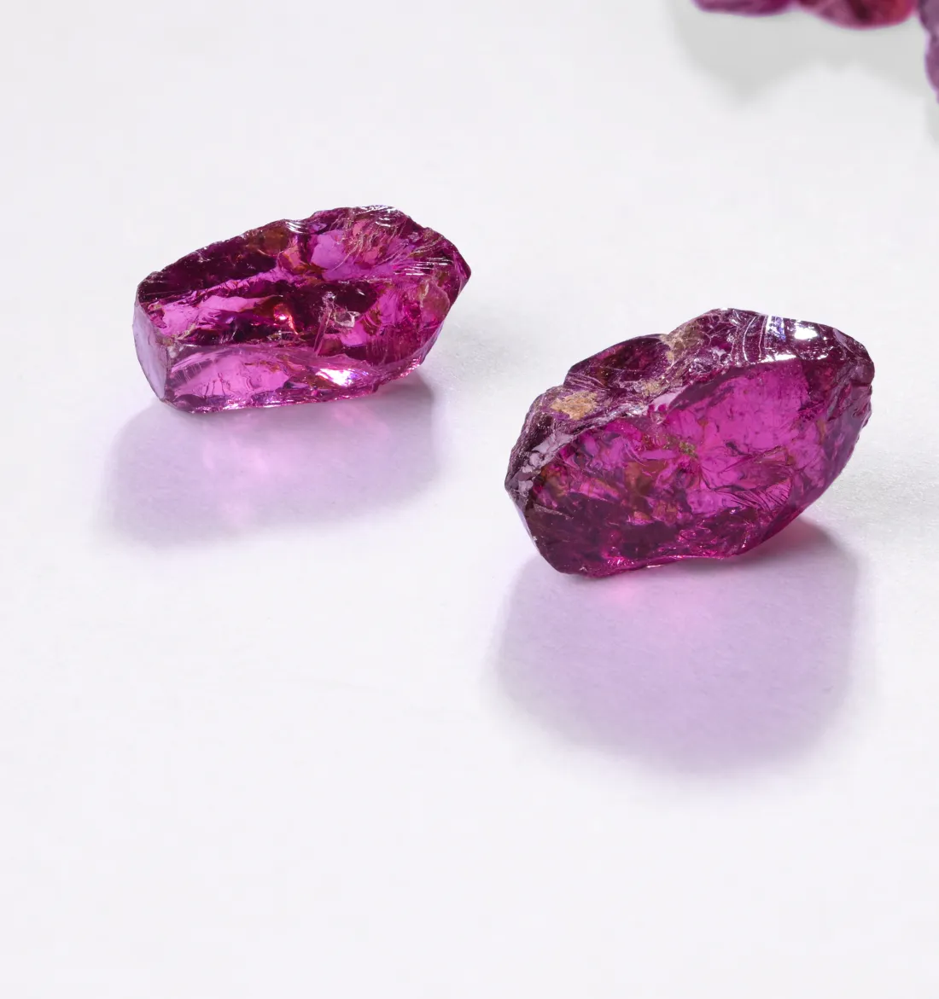
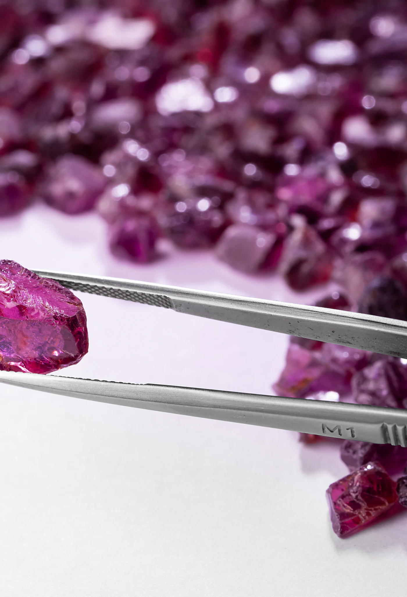
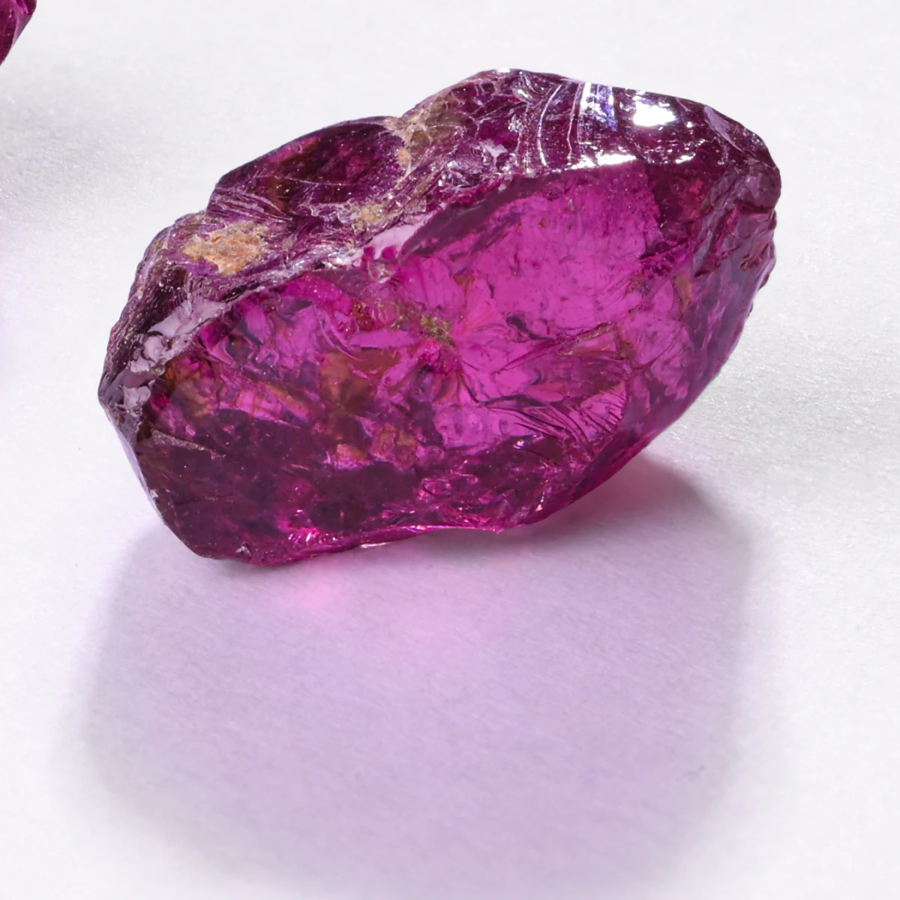

Almandine
It is a stunning fusion of Almandine…

The Rhodolite Garnet is a magnificent gemstone that boasts a mesmerizing range of colours, from the sought-after “spirit” shades to the captivating raspberry hues.
Its name is derived from the Greek word ‘Rhodon’, meaning ‘rose’, which is fitting for its delicate and alluring pinkish-red hue.

It is a stunning fusion of Almandine…
…and Pyrope garnet…
…resulting in a breathtaking display of purple-red hues that are sure to captivate anyone who lays eyes on it.


Rhodon
[Greek]
Rose.
Often overshadowed by their more popular red counterparts, its high refractive index creates unparalleled brilliance and shimmer.
A mesmerizing range of colours, from the sought-after “spirit” shades to the captivating raspberry hues.
Durable and perfect for all types of jewelry, including rings and necklaces.
With a Mohs score of 7.0 to 7.5, Rhodolite Garnet is durable.

Umba
River Valley, Tanzania
Mining for this gemstone is delicate and intricate. Alluvial mining in Tanzania's Umba River Valley allows for easy collection, while open-cast mining occurs in Kangala.


With a history that spans back to ancient times, the Rhodolite Garnet has been revered as a protective amulet by travelers in Rome, Egypt, and Greece.
The gem's mystique even extends to biblical legend, where Noah is said to have relied on its guidance.
The gem has been used for protection and even bullet-making.
As the January birthstone, it's believed to symbolize love and faithfulness.
